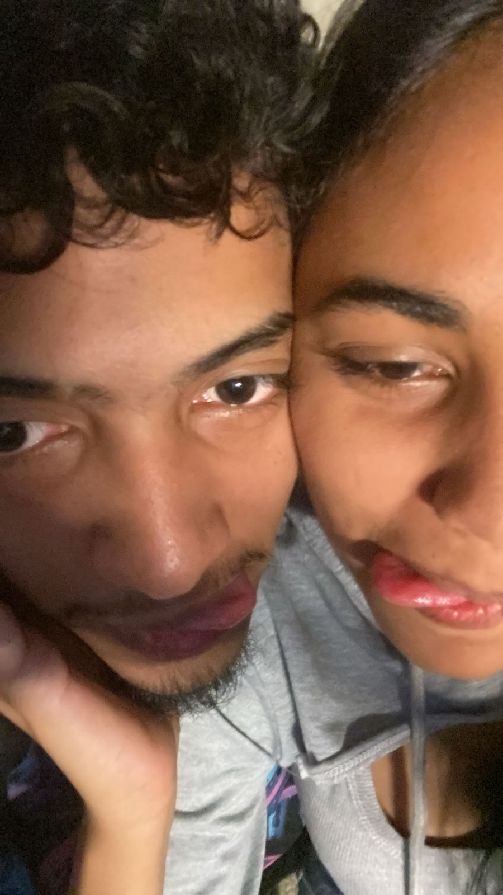

Una página sencilla… pero hecha con todo mi amor 💻❤️
Amor, esta página ya lleva tiempo… pero hoy la miro con otros ojos. Porque anoche, mientras intentábamos encontrarnos otra vez, recordé por qué la hice. No fue solo por cariño, fue por la esperanza. Por las ganas de cuidarte, de expresarte lo que a veces no sé decirte en persona. Cada enlace, cada palabra, cada rincón de esta página nació de lo que siento por ti. Y aunque pasamos momentos complicados, el amor no se fue. Solo se quedó en silencio un rato.
Anoche no solo hablamos… también construimos un pequeño puente. Uno que quizás no solucione todo de inmediato, pero que nos recuerda que todavía estamos aquí, intentando. Y eso ya es mucho. Gracias por darme la oportunidad de explicarme, de escucharte, de volver a mirarnos con menos orgullo y más verdad. Gracias por no rendirte.
Espero que esta página, aunque sencilla, siga siendo ese espacio donde puedas sentir cuánto te amo. Porque si algo tengo claro, es que a pesar de todo, seguimos valiendo la pena.
Con todo mi amor, ahora con más ganas que nunca. 🫶✨